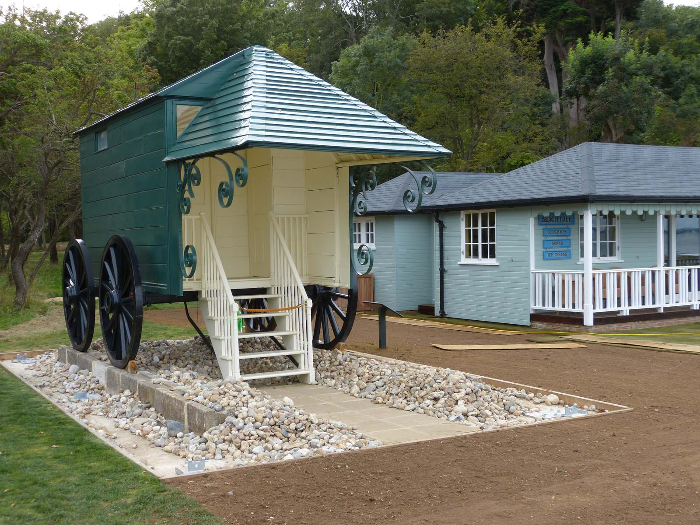

This is the bathing machine Queen Victoria used at Osborne, her house by the sea on the Isle of Wight. She first went into the sea from it on 30 July 1847. It is 12 feet long: as long as a small car.

1 2 3 4 5 6 7 8 9 Photo: grumpylumixuser, 2012, CC BY 3.0, via Wikimedia CommonsThe winch. No horse for the Queen. A man turned the handle of a winch, and its wire rope let the machine down the rails into the sea, then wound it back up.
The dipper. A strong helper who waited in the water to help bathers in, and sometimes dunked them under.
Victoria wrote in her diary that her first dip was delightful, until she put her head under the water.
After she died, her bathing machine was used as a hen house! It has been mended, and it stands by the beach at Osborne.
Sources: English Heritage, "Five ways to have beach fun like Queen Victoria" (flat iron tyres, changing room, plumbed-in lavatory, curtained veranda, a winch and wire rope); Historic England Archive, IC076/002 (grooved stone rails, winch and cable, first swim 30 July 1847); Emsworth Museum, "Bathing belles and bathing machines" (12 feet long, silver handles, horses); The Victorian Web, "The Queen's bathing machine at Osborne" (her diary, segments of stone rails); History Hit (dippers); Wikipedia, "Bathing machine" (the hen house). Roof, canopy, brackets, window and wheel size are from the photographs.